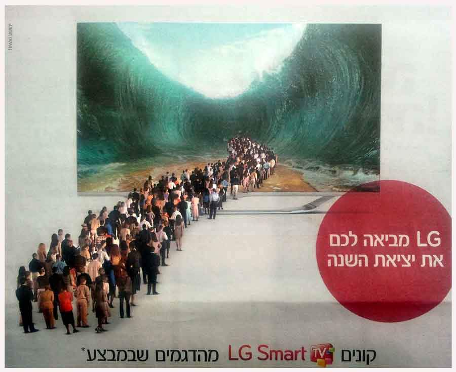
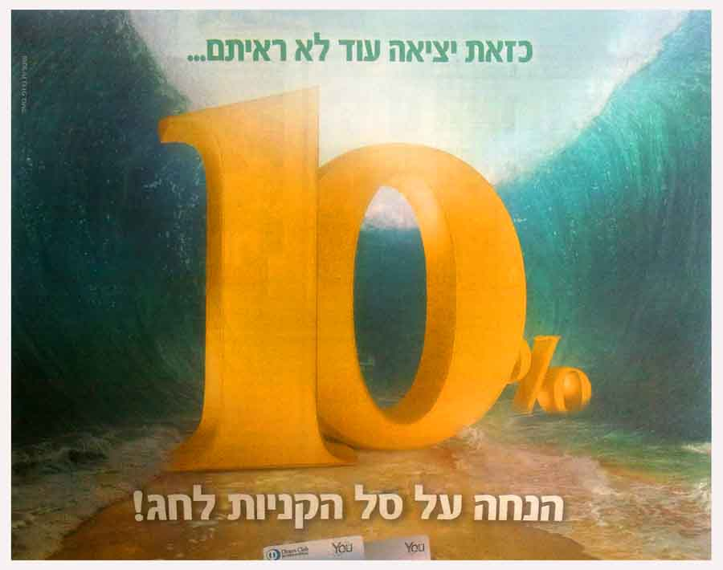
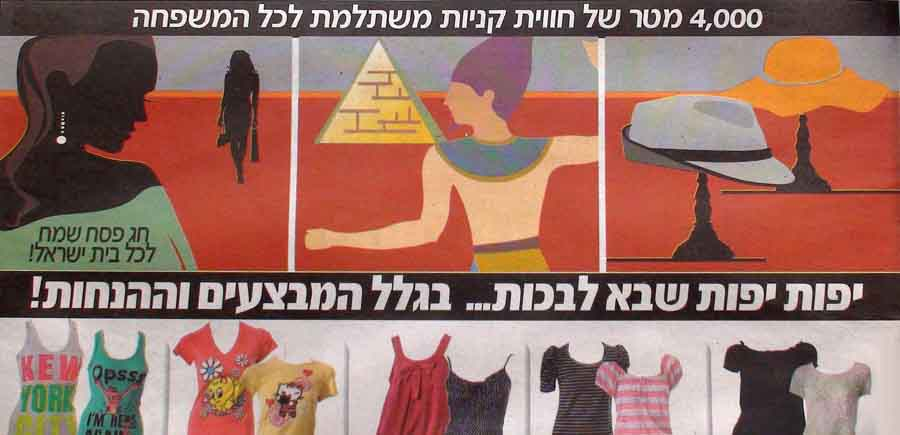

Pesach in Israeli Advertising
In this article I want to offer some advertising cuttings from Israeli newspapers published before the feast. All of them are linked by one theme: the feast of PESACH (Passover) in Israeli advertising.

For several years now, when looking through Israeli newspapers, I have paid special attention to the advertisements. Especially in the sales before the feasts, Israeli advertising often draws inspiration from Jewish tradition, turning to images and texts of the Torah and the Scriptures. Unlike in other countries, the great majority of Israel's public holidays are biblical feasts.
Honestly, I don't know whether there is another country where images from the Holy Scriptures fill the newspapers at holiday time. One should not think, however, that all Israelis are so devout. It would not be serious to say that advertising in Israel, using biblical images and traditions, dives too deep. Many people see it simply as folklore, without thinking much about miracles and faith…
Of course, Israeli advertising, like any other, uses the holiday season for commercial campaigns. That is understandable: this is the time when people buy the most.
And it would be strange to expect advertising to do a preacher's job. At the same time, as research has shown more than once, advertising certainly has a strong influence on the minds of young people and of the population in general. That is why even the little of the Torah and the Prophets that there is in Israeli advertising warms my heart, gives rise to thoughts and even inspires me.
It is amusing that today's advertising is built on images more than three thousand years old. And the advertisers themselves, mostly quite secular people, draw inspiration from the biblical stories.
Advertising often plays on the supernatural and yet possible… Quotations from the Torah, from the Passover Haggadah or from old songs sung at the Seder table on Passover night are often used as slogans.


A discount on the holiday shopping basket! "You have never seen an Exodus like this…" That is: take the 10% discount and you will pass through all your holiday spending as on dry land, like our fathers who once crossed the sea safe and dry. The message is clear: deal with us, and everything will be arranged supernaturally!

Of course, the main "character" of the Passover Seder is MATZAH, and matzah also reigns in the advertising. For a story about matzah, see here.

Sails made of matzah: a rare image that gives rise to many associations and thoughts.

This has to be understood in the context of the situation described in the Torah, when the children of Israel despoiled the Egyptians: at the word of the Most High they asked them for many precious articles of silver and gold and fine clothing (see Exod 3:20–22 and 12:35–36), that is, they received enormous wealth for nothing. Later this wealth was used to build the Mishkan (Tabernacle) in the wilderness of Sinai.
So the advertisement hints that you can now get these precious gifts from Suzuki at almost the price of that Egyptian wealth, that is, almost for free!

The caption on the advertisement: "So beautiful it makes you want to cry… because of the discounts and special offers."
The festive mood and the atmosphere of the Seder are created by a frieze of pictures like the comic strips of the Passover Haggadah. In it, as in many such haggadot, no distinction seems to be made between ancient and present-day events. This creates a sense of belonging and continuity.

Most often advertising turns to all kinds of clichés: symbols, ideas and expressions that absolutely everyone in Israel understands.


Who, for example, does not know the phrase "Mah nishtanah…?" and others like it: "When thy son asketh thee… What is this? Why do we do this on this night?" (see Exod 12:26; 13:14 and elsewhere), or "Ehad, mi yodea?" (a counting song sung by the whole family at the Seder meal).
Author: Ephraim Kalish / TORAART
 The Beginnings of Zionist Art. The Ades Synagogue
The Beginnings of Zionist Art. The Ades Synagogue The Beginnings of Zionist Art. Part II
The Beginnings of Zionist Art. Part II The Beginnings of Zionist Art. Part III
The Beginnings of Zionist Art. Part III